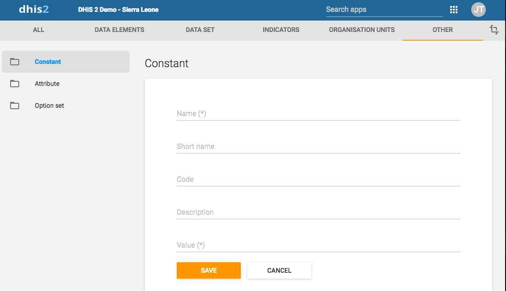

Constants are static values which can be made available to users for use in data elements and indicators. Some indicators, such as "Couple year protection rate" depend on constants which usually do not change over time.
|  |
In the Maintenance app, you manage the following constant objects:
Table 9.16. Constant objects in the Maintenance app
|
Object type |
Available functions |
|---|---|
|
Constant |
Create, edit, clone, share, delete, show details and translate |
-
Open the Maintenance app and click Other > Constant.
-
Click the add button.
-
In the Name field, type the name of the constant.
-
(Optional) In the Short name field, type an abbreviated name of the constant.
-
(Optional) In the Code field, assign a code.
-
In the Description field, type a brief, informative description of the constant.
-
In the Value field, define the constant's value.
-
Click Save.
The constant is now available for use.
Cloning a data element or other objects can save time when you create many similar objects.
-
Open the Maintenance app and find the type of metadata object you want to clone.
-
In the object list, click the options menu and select Clone.
-
Modify the options you want.
-
Click Save.
You can assign different rights to the for example a data set based on user groups and user roles.
-
Open the Maintenance app and find the type of metadata object you want to modify.
-
In the object list, click the options menu and select Sharing settings.
-
(Optional) Search for a user group and select it. The user group is added to the list.
-
Change the settings for the user groups you want to modify.
-
Can view : Everyone in the user group can view the object
-
Can edit : Everyone in the user group can view and edit the object
The default setting is that everyone (Public access) can view and edit objects.
-
-
Click Close.
![[Note]](../Resources/note.png)
|
Note |
|---|---|
|
You can only delete a data element and other data element objects if no data is associated to the data element itself. |
![[Warning]](../Resources/warning.png)
|
Warning |
|---|---|
|
Any data set that you delete from the system is irrevocably lost. All data entry forms, and section forms which may have been developed will also be removed. Make sure that you have made a backup of your database before deleting any data set in case you need to restore it at some point in time. |
-
Open the Maintenance app and find the type of metadata object you want to delete.
-
In the object list, click the options menu and select Delete.
-
Click Confirm.
-
Open the Maintenance app and find the type of metadata object you want to view.
-
In the object list, click the options menu and select Show details.
DHIS2 provides functionality for translations of database content, for example data elements, data element groups, indicators, indicator groups or organisation units. You can translate these elements to any number of locales. A locale represents a specific geographical, political, or cultural region.
![[Tip]](../Resources/tip.png)
|
Tip |
|---|---|
|
To activate a translation, open the System Settings app, click > Appearance and select a language. |
-
Open the Maintenance app and find the type of metadata object you want to translate.
-
In the object list, click the options menu and select Translate.
Tip If you want to translate an organisation unit level, click directly on the Translate icon next to each list item.
-
Select a locale.
-
Type a Name, Short name and Description.
-
Click Save.